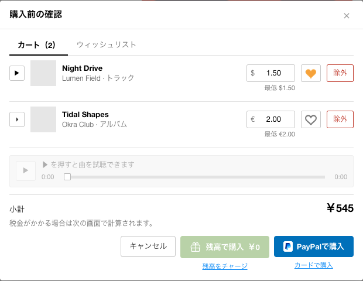
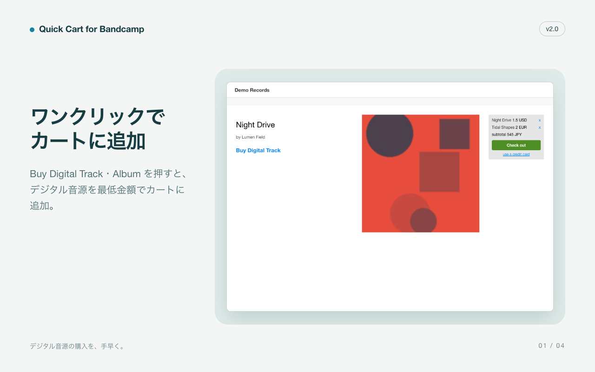

BANDCAMP向け CHROME拡張
気になった曲を、
手早くカートへ。
追加、試聴、金額の確認。
購入までの操作を、少しシンプルに。
ギフトカード機能を含むv2は公開準備中です。ストアでは現在公開中のバージョンを入手できます。
購入前に、まとめて確認

曲を選ぶ時間を、もっと。Quick Cart
できること
いつもの購入を、
少ない操作で。
Bandcampのデジタル音源向け。
使う機能だけ、設定から選べます。

画面は架空の音源・アカウントを使ったデモです。
V2の新機能
カートを残して、
残高をチャージ。
ギフトカードの購入から登録まで、同じカートから進められます。音楽の購入は最後に自分で確認します。
- 01
金額を選んで購入
Bandcamp公式の決済を小窓で開きます。元のカートはそのまま。
- 02
メールのコードを入力
届いたコードを入力し、「残高に登録」を押します。Gmailを開くボタンも用意。
- 03
最新の残高でカートへ
登録を確認してカートに戻ります。追加の確認が必要な場合は公式画面を表示します。
コード登録は現在、円建てに対応。Gmailへの接続やメールの読み取りは行いません。
次に聴きたい曲を、見つけに。
Chromeウェブストアで見るBandcampとは提携していない非公式の拡張機能です。